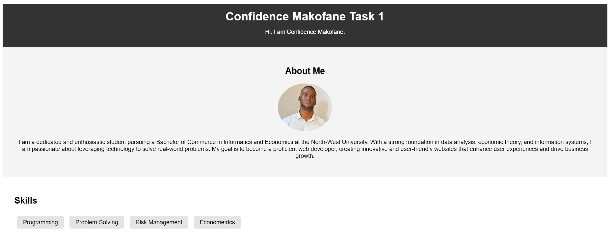

Projects
Task 1 - Portfolio
This project involves creating a personal portfolio website using HTML and CSS. The website is designed to showcase personal and professional information, making it ideal for job seekers, freelancers, and professionals looking to establish an online presence. The portfolio includes sections such as a header, about me, skills, projects, resume, contact, and footer.
Task 2 - Landing Page

Project 1 description.
Task 1 - Calculate
Project 1 description.